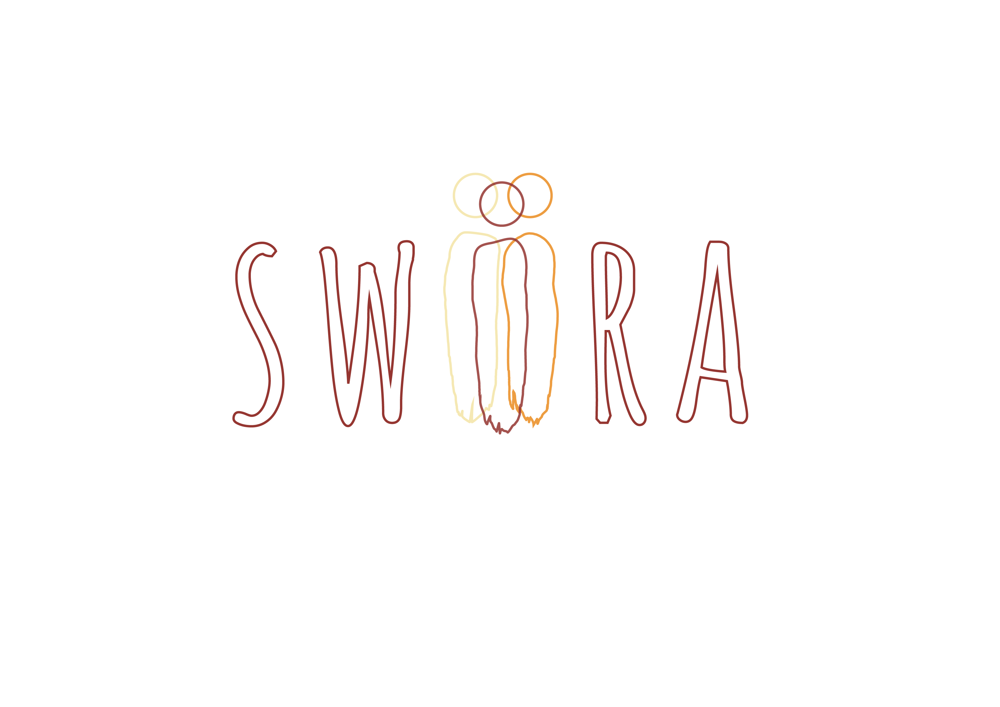
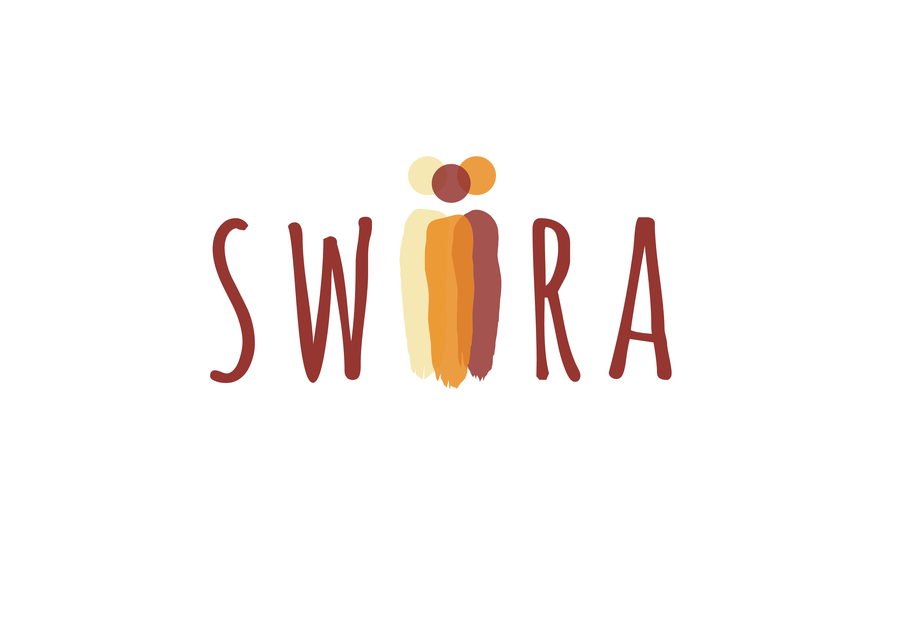

Logo
4 kleuren logo
Het logo is het meest belangrijke element in deze nieuw identiteit. Het is zorgvuldig ontworpen en afgesteld op de VZW. Het is belangrijk om het logo correct te gebruiken doorheen alle publicaties.
Download logo.png
Download logo.ai
Download logo.ai
Bounding box
Voor een maximale impact, moet het logo voldoende witruimte bevatten langs de randen. Er is dan ook een minimum ruimte tussen het logo en andere elementen (zoals illustraties, foto’s, vlakken,…) die gerespecteerd moet worden.
De voorziene ruimte wordt bepaald door een imaginair kader te trekken rond het logo. De grootte van dit kader wordt bepaald door de uiteinden van het logo te vergezellen van de 3 bollen in het logo. Geen enkel element mag zich in deze ruimte bevinden.
Download bounding box.png
Download bounding box.ai
Onjuist gebruik


Een merk spreekt het luidst wanneer het één stem heeft. Gelieve geen grafische beslissingen te nemen die in strijd zijn met de richtlijnen die in dit document ontwikkeld zijn. Hieronder volgen enkele voorbeelden van foutieve weergaven van het logo.
1 kleur logo en negatief
Het logo zal grotendeels gebruikt worden in kleur. Dit geeft geen probleem als de achtergrond kleur wit is, maar als de achtergrond donker is, een sterke kleur, of voor enkele andere reden ook niet geschikt is in combinatie met de merkkleuren, kan een 1 kleurlogo gebruikt worden.
Er zijn 2 versies toegestaan van het 1 kleur logo, zwart of wit. Het zwarte logo kan gebruikt worden als de configuratie van de merkkleuren niet beschikbaar is. Het witte logo kan op gekleurde achtergronden worden gebruikt wanneer het gebruikt van het kleurlogo problematisch blijkt te zijn.
Download zwart logo.png
Download zwart logo.ai
Download wit logo.png
Download wit logo.ai
{kind=link}
{kind=link}
{kind=link}
{kind=link}
{kind=link}
{kind=link}
{kind=link}
{kind=link}
{kind=link}
{kind=link}
{kind=link}
{kind=link}

{kind=link}